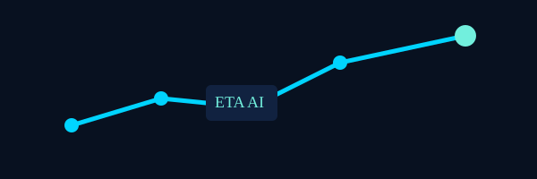
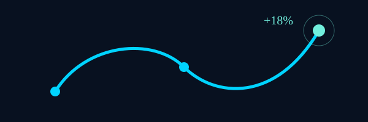
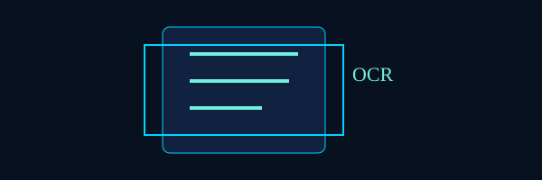
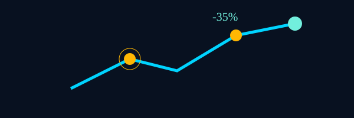

Driving product outcomes at the intersection of operations and AI.
I am a Senior Software Engineer at Delhivery transitioning to AI Product Management, with 5+ years driving cross-functional initiatives that reduced delays, automated manual work, and improved operational KPIs. I translate operational pain points into product requirements, align stakeholders, and deliver measurable outcomes through data-driven roadmaps and experimentation.
Case Studies
Two focused case studies that show problem framing, approach, and measurable outcomes.
AI Shipment Tracking & ETA Prediction

Logistics AI Co-Pilot

OCR Waybill Processing

AI Exception Management

AI Product Management
How I apply Generative AI and ML to logistics and support workflows — product ideas and experimentation approach.
GenAI for Support Triage
Use LLM-assisted triage to summarize cases, suggest next actions, and draft responses for agents — integrated with OCR to parse scanned waybills.
Experimentation: Start with shadow-mode scoring, measure suggested-vs-human action agreement, then A/B test with agents accepting suggestions.
Operational Decision Assistants
Build lightweight models to predict exceptions and re-routing needs; surface prioritized alerts and suggested remediations to network leads.
Product idea: Actionable dashboards + one-click remediation flows with confidence bands and rollback paths.
About Me
My background combines strong technical execution with product thinking. Over the last several years, I have worked closely with cross-functional stakeholders to identify business bottlenecks, define requirements, prioritize impactful improvements, and deliver systems that improve operational efficiency at scale.
Why Product Management
I enjoy understanding user pain points, identifying root causes, and shaping practical solutions that balance customer needs, operational feasibility, and business outcomes. My experience already includes requirement analysis, sprint planning, triage, workflow design, and KPI-oriented delivery.
Why AI Product Management
With growing exposure to Generative AI tools such as Gemini, Claude, OCR workflows, and AI-assisted development platforms, I want to apply my engineering foundation to build intelligent products that automate decision-making, improve support workflows, and enhance platform visibility for users.
Key Product Initiatives
Selected initiatives that reflect my product-oriented approach to solving operational and platform problems.
Route-Wise Bag Mapping
Collaborated with network leads to optimize shipment sorting paths and improve route mapping workflows across logistics operations.
Shipment Charge Tracking
Built a system to identify financial visibility gaps, track shipment charge anomalies, and enable recovery of previously untracked operational costs.
Waybill Exception Management
Designed support workflows in collaboration with EMS and support teams to automate exception handling and reduce repetitive manual tasks.
Shipment Visibility & MPS Tracking
Improved package scanning and visibility flows for multi-package shipments to reduce operational errors and strengthen warehouse accuracy.
Professional Experience
My career progression shows increasing ownership across engineering execution, operational problem solving, and product-aligned delivery.
Senior Software Engineer | Delhivery Pvt. Ltd.
- Partner with Operations, Customer Support, and Engineering teams to analyze bottlenecks and improve end-to-end shipment visibility.
- Lead requirement analysis and contribute solution designs for business-critical operational services.
- Drive technology-led improvements in package processing efficiency and system health.
- Coordinate delivery planning, sprint sequencing, and phased rollout execution with stakeholders.
Software Engineer | Delhivery Pvt. Ltd.
- Owned foundational microservices for route bagging, shipment charge workflows, and automated customer alert systems.
- Built Route-Wise Bag Mapping, reducing shipment delays by 25%.
- Developed shipment charge tracking flows to recover previously untracked platform leakage.
- Collaborated with EMS and support teams to launch waybill exception flows, reducing manual effort by 35%.
- Improved MPS visibility tracking, reducing package scanning and sorting mistakes by 20%.
- Implemented SMS notification workflows to improve shipment journey communication and reduce failed field delivery attempts.
QA Engineer | Delhivery Pvt. Ltd.
- Designed validation scenarios to confirm software behavior against critical business requirements.
- Contributed to sprint planning, retrospectives, and requirement breakdown discussions.
- Built early exposure to product alignment, launch readiness, and quality-focused delivery.
Skills & Competencies
A blend of product, technical, and AI-related capabilities that support a strong transition into AI Product Management.
Product Skills
- Requirement Gathering & Analysis
- User Story Writing
- Backlog Management
- Agile & Scrum
- Feature Prioritization
- Stakeholder Management
- KPI Tracking
- Cross-Functional Collaboration
Technical Skills
- Python, Java, SQL
- AWS: Lambda, API Gateway, DynamoDB, S3, SQS, MSK
- Microservices Architecture
- Distributed Systems
- Apache Kafka
- Kubernetes, Docker
- MongoDB, NoSQL, Redis, Elasticsearch
AI & Analytics
- Generative AI (GenAI)
- Google Gemini
- Claude AI
- OCR Workflows
- Root Cause Analysis
- Data-Driven Decision Making
- AI-assisted productivity tooling
Education
Bachelor of Technology (B.Tech.) - Computer Science & Engineering
Lovely Professional University | Graduation: January 2021
Contact
Open to Product Management and AI Product Management opportunities where technical depth and customer-centric thinking can be used to build meaningful, scalable products.
Reach Out
Email: shashir160@gmail.com
Phone: +91-6283671721
Location: Gurgaon, India
LinkedIn: linkedin.com/in/sranjan-s07
Positioning Statement
I bring a product mindset shaped by operational complexity, engineering rigor, and measurable outcomes. I focus on problem discovery, clear success metrics, and rapid experiments to validate AI opportunities in workflow automation, platform intelligence, and support operations.